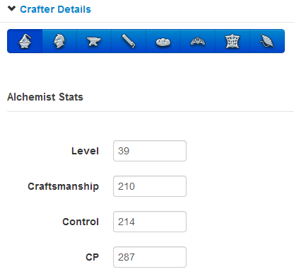
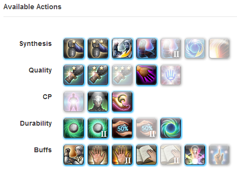
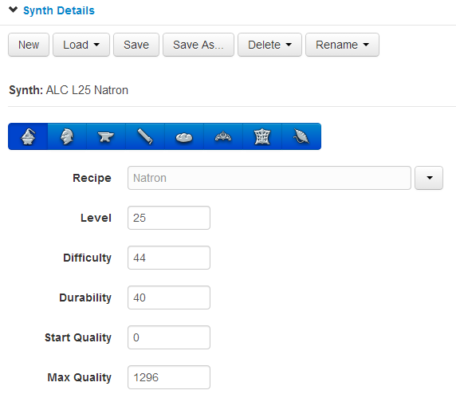
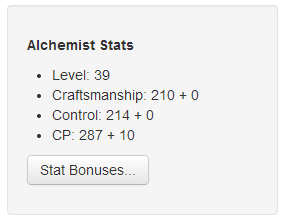
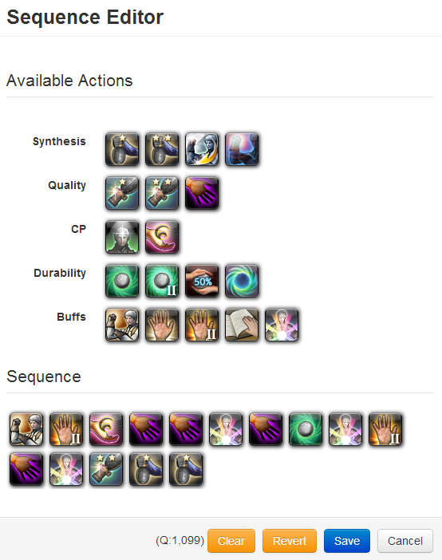
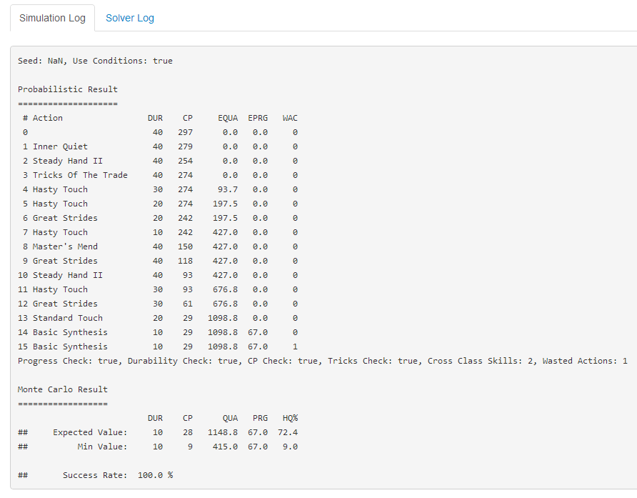

Using the Simulator
- Go to the Crafter Details section.
 - Select a class whose details you want to update.
- Enter your class' stats excluding food.
- Go to the Available Actions section.
 - Select the (cross class) actions available to the class you selected in the previous step.
- Repeat steps 2 to 5 as necessary.
- Go to the Synth Details section.
 - Select the class of the recipe you want to simulate.
- Select the recipe name from the Recipe dropdown to automatically fill out the recipe information.
- If the recipe is not available from the dropdown, the information can be entered into the fields manually.
- Go to the Class Stats section.
 - Click on the Stat Bonuses button to enter additional information about food boosts.
- Go to the Simulator section.

- Click the Edit Sequence button to change the action sequence. Only actions selected for this class in step 5 will be available.
 - Click or drag and drop actions into the Sequence section and then click Save.
- Click the Simulate button.
- (Optional) The simulator settings can be edited by clicking on the Options section.
- After the simulation is complete, go to the Simulation Log section.
 - Details of the simulation results will be displayed in the Simulation Log.
Abbreviations:- DUR - remaining durability
- CP - remaining control points
- (E)QUA - the (expected) average quality
- (E)PRG - the (expected) average progress
- WAC - actions attemped after the synthesis has reached maximum progress or minimum durability (wasted actions)
- If you are happy with the results you can click on the Macro button in the Simulator section. This feature does not play well with Tricks of the Trade.
- You can also save the recipe and sequence for later use by clicking the Save button in the Synth Details section.
Using the Solver
You can also try using the solver to see if the sequence can be improved.
- After running the simulator, go to the Simulator section.
- Click on the Solve button. The computer will try random variations of your initial guess to see if it can improve on the sequence. This step is not guaranteed to return the same result every time, so try clicking a few times if no improvement can be found in the first try.
- The best result will be displayed in the Solver Result section.
- If the new result is preferred, click the Use Solver Result to replace your initial guess with the solver's result.
- Go to the Solver Log to see a simulation of the result returned by the solver.